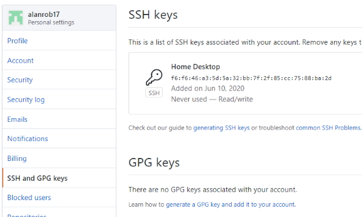

We need to set up SSH on our machine. SSH is the protocol used to securely transfer code between your machine and GitHub/Heroku.
Windows users won’t have access to the necessary SSH commands from the command prompt. Make sure to use Git Bash for the following commands.
SSH uses an SSH key pair to secure the connection between your machine and the machine you’re communicating with. You can check if you already have an SSH key pair with the following command. You have a key pair if you see id_rsa and id_rsa.pub in the output.
ls -a -l ~/.ssh
You can create a new key pair using the following command. Make sure to swap out the email for your email address.
[ssh-keygen -t rsa -b 4096 -C "youremail@domain.com"
The SSH key needs to be configured to be used for new SSH connections. First, ensure that the SSH agent is running. You can do that using the command below.
eval "$(ssh-agent -s)"
The command below is for Linux users and Windows users.
ssh-add ~/.ssh/id_rsa
You need to copy the ssh key to GitHub.
cat ~/.ssh/id_rsa.pub
Will print out the key for you. Copy the key from ssh-rsa to the end of the email address you created for the key.
Go up to your GitHub site and click on the profile button on the top-right hand corner.
Select the SSH and GPG Keys tab. Click on the ssh keys section to add a new key.

Add a name for the machine the key was created on (e.g. Home Desktop) and paste the key that you copied from your ~/.ssh key, id_rsa.pub. This should add the ssh key to GitHub.
Install command line tools.
heroku --version
To get the version number. This tells you that you have successfully installed Heroku.
To login.
heroku login
To add your ssh key.
heroku keys:add
This will search for your key and pick our only key, id_rsa.pub.
To create a Heroku app.
We need to run this from the root of our app. /D/WebDev/Node/node-course/web-server
heroku create ar-weather
If the name is unique it will create the url for you. It will also create the place to push your app.
https://ar-weather.herokuapp.com/ | https://git.heroku.com/ar-weather.git
In order to run our application we have to tell Heroku which application to run. We can add this to our package.json file.
{
"name": "web-server",
"version": "1.0.0",
"description": "",
"main": "index.js",
"scripts": {
"start": "node src/app.js"
},
"keywords": [],
"author": "",
"license": "ISC",
"dependencies": {
"express": "^4.17.1",
"hbs": "^4.1.1",
"postman-request": "^2.88.1-postman.23"
}
}
The following section tells Heroku how to run our application.
"scripts": {
"start": "node src/app.js"
},
We could also run our application using this command, node src/app.js
In development we hardcoded the localhost:3000 url. We have to remove these from our code.
const app = express();
const port = process.env.PORT || 3000;
Adds the port reference.
Change the listen reference.
app.listen(port, () => {
console.log('Server is up on port ' + port);
});
You need to change the public\src\app.js file.
const url = '/weather?address=' + location;
Now, we can push our changes to GitHub and then push our changes to Heroku.
git push heroku master
We’ll go through the process of adding a new feature to the application. This includes committing the changes, pushing them to GitHub, and deploying them to Heroku.
Add new data to forecast
const request = require('postman-request');
const forecast = (latitude, longitude, callback) => {
const url = 'http://api.weatherstack.com/current?access_key=f41e35407998bf659423ffd2ac284503&query=' + latitude + ',' + longitude + '&units=m';
request({ url, json: true }, (error, { body }) => {
if (error) {
callback('Unable to connect to weather service.');
} else if (body.error) {
callback('Unable to find location.');
} else {
const tempObject = {
temperature: body.current.temperature,
precipitation: body.current.precip,
description: body.current.weather_descriptions,
feelslike: body.current.feelslike
}
const { temperature, precipitation, description, feelslike } = tempObject;
callback(undefined, `It is currently ${temperature} degrees out but feels like ${feelslike} degrees. It is $ {description} and there is ${precipitation}% chance of rain.`);
}
});
}
module.exports = forecast;
To deploy, the workflow is:
git status
git add .
git commit -m "Add feels like message to forecast."
git push
git status
git push heroku master
Now, we are going to refactor our application to remove the use of global modules. This ensures that your application installs all the dependencies you need to run.
Sick of typing out that long nodemon command? Let’s turn it into a script.
You can create a dev script with the value nodemon src/app.js -e js,hbs. This will start up the dev server anytime you run npm run dev.
The dev script needs nodemon to be installed. The issue is that nodemon isn’t listed as a dependency in package.json. However, this can be fixed by uninstalling nodemon globally.
npm uninstall -g nodemon
Now, install it as a local dependency.
npm install nodemon --save-dev
Now, npm install will be able to install all your application dependencies, including nodemon!
{
"name": "web-server",
"version": "1.0.0",
"description": "",
"main": "index.js",
"scripts": {
"start": "node src/app.js",
"dev": "nodemon src/app.js -e js,hbs"
},
"keywords": [],
"author": "",
"license": "ISC",
"dependencies": {
"express": "^4.17.1",
"hbs": "^4.1.1",
"postman-request": "^2.88.1-postman.23"
},
"devDependencies": {
"nodemon": "^2.0.4"
}
}
The script above shows nodemon as a dev dependency.
To run the dev script.
npm run dev